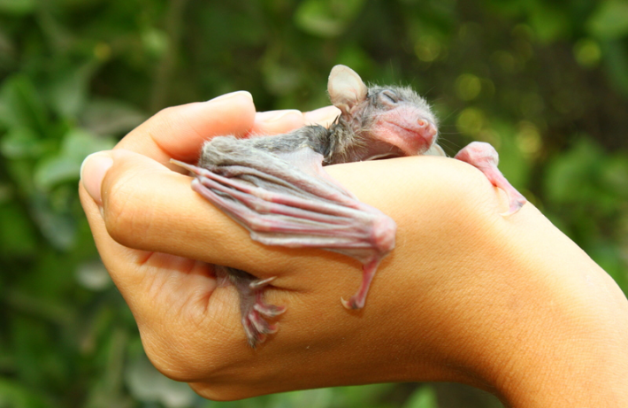

Bats are sometimes called the “invisible mammal.” Their nocturnal lifestyle, combined with their silent hunting strategy and hidden haunts make them obscure to all but the most dedicated chiropterologists. But new light is being shed on the typically shadowy mammal, and just in time for Bat Week.
Six species of North American bats recently managed to surprise researchers who learned that the flying mammals emit an eerie green glow after being illuminated with ultraviolet light. Checking 60 separate museum specimens, scientists working at the Georgia Museum of Natural History found that all of them glowed a shade of green under the ultraviolet light. Although several insects, plants, and mammal species—including flying squirrels and pocket gophers—have been shown to glow, this is the first time that researchers have documented the phenomenon in North American bats. They published their findings in Ecology and Evolution.
Interestingly, the bats all seemed to glow in the same spots, specifically on their wings and hind limbs. Because they all glowed in the same way with the same hue, the authors suggested that the function of the characteristic is not to differentiate species or sexes. “It’s cool, but we don’t know why it happens,” said Steven Castleberry, study coauthor and University of Georgia biologist, in a statement. “What is the evolutionary or adaptive function? Does it actually serve a function for the bats?” Castleberry and his colleagues posit that the glow may be a remnant of some ancient adaptation retained by numerous bat species, but add that studying it in living bats might yield more information as to its ecological function.

Photo by Mickey Samuni-Blank / Wikimedia Commons
The mammals have other tricks up their sleeves. In a survival struggle between bats and rats, researchers have highlighted some clever behavioral changes. Things can get rather testy between Egyptian fruit bats and black rats where their ranges overlap. They compete for food and sometimes even prey upon each other. It turns out that the fruit bats change the way they forage depending on the abundance of rats—and of their shared resources.
Researchers at Tel Aviv University studied hundreds of hours of video of a semi-natural bat colony for seven months and noticed that bats altered their feeding strategies in unexpected ways from winter to warmer months. In winter, when rats—which sometimes prey on bats—and food were both scarce, bats behaved skittishly, landing less frequently and showing heightened vigilance, which decreased their feeding efficiency. But when the weather warmed, and the bats’ chances of encountering food and rats increased, they landed and fed more often. This time of year also saw an increase in bat-rat interaction, with bats boldly attacking the rodents at times.
The researchers published their results in BMC Biology. “We tend to describe relationships between different species in simplistic terms—either as competition or predation,” said study coauthor and Tel Aviv University bat biologist Yossi Yovel in a statement. “This study shows how complex such relationships can be and how animals are able to adapt their response strategies to changing circumstances.”
As new insights into the physiology and behavior of bats emerge, scientists are also discovering entirely new species. Researchers studying bats from the tropical forests of the Philippines have formally named six new species. All of the new-to-science bat species are so-called tube-nosed bats, members of genus Murina. Scientists with the Royal Ontario Museum, the Field Museum in Chicago, and Lawrence University in Wisconsin, used several methods, including morphological analysis and genetic testing, to confirm the classification of the new species, which all subsist on a steady diet of insects in their protected forest home. “It has been a long and slow process of discovery, but these six previously unknown species show clearly just how wonderfully extensive Philippine biodiversity is,” Lawrence Heaney, Curator Emeritus of Mammals at the Field Museum and coauthor of the Zootaxa paper detailing the discovery, in a statement.
As you progress through Bat Week 2025, spare a thought for these oft-maligned marvels of nature. They may be spooky to some, but they are also a source of continuing scientific surprises. 
EnjoyingNautilus? Subscribe to our free newsletter.
Lead image: Ecology & Evolution